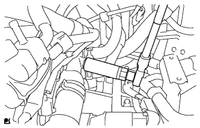
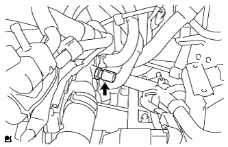

E.F.I. Water Temperature Sensor (2GR-FE) Installation |
| 1. Install E.F.I. Water Temperature Sensor |
 |
Using SST, install the E.F.I. water temperature sensor with a new gasket.
 |
Connect the E.F.I. water temperature sensor connector.
| 2. Install Air Cleaner Case |
 |
Install the air cleaner case with the 3 bolts.
Connect the clamp.
| 3. Install Air Cleaner Cap w/ Air Cleaner Hose |
 |
Install the hinge portion first, and then install the air cleaner cap w/ air cleaner hose with the 3 clamps.
Install the clamp hose band. (*1)
Connect ventilation hose No.2. (*2)
Connect the air flow meter connector. (*3)
| 4. Add Coolant (Toyota Genuine Super Long Life Coolant) |
Close the radiator drain cock plug.
Close the cylinder block drain cock plug.
 |
Fill coolant of the specified concentration up to the B line of the radiator reserve tank.
After installing the reservoir tank cap, warm up the engine until the thermostat opens. (A)
After warm-up, repeat the cycle of 3000rpm engine speed for 5 seconds ←→ idling for 45 seconds 8 times or more (7 minutes or more). (B)
Stop the engine and wait until the coolant cools down, and if the level is below LOW, add coolant of the specified concentration through the filler again and adjust it to between FULL and LOW. (C)
Repeat steps (A) to (C) until the coolant level in the radiator reservoir tank stops dropping.
When the level stops dropping, add coolant of the specified concentration through the filler again to adjust the coolant level in the radiator reservoir tank to between FULL and LOW.
| 5. Inspect for Coolant Leaks |
 |
Fill the radiator with coolant and install a radiator cap tester.
Warm up the engine.
118kPa{1.2kgf/cm2Pump it to } and check that the pressure does not drop.
| 6. Install Battery |
Install the battery to the vehicle
Install the insulator.
 |
Connect the current sensor connector.
 |
Install the battery clamp with the bolt and nut.
Connect the battery positive terminal with the nut.
| 7. Connect Battery Negative Terminal |
| 8. Install V-bank Cover Sub-assembly |
 |
Engage the 3 clips to install the V-bank cover.
| 9. Install Radiator Upper Air Deflector |
 |
Install the radiator upper air deflector with the 9 clips.
| 10. Setting Procedure When Disconnecting/Reconnecting Battery Terminal |
)